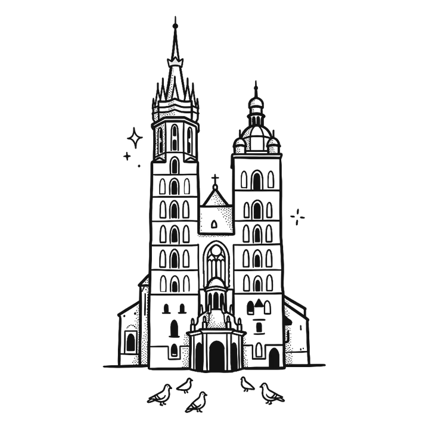
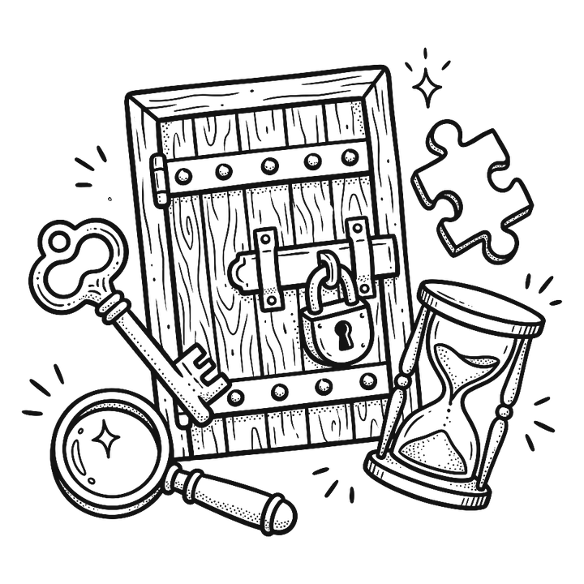

Przystanek ✦
01
Kraków

Jedziemy do Krakowa! Pierwszy przystanek:
Aleja Zygmunta Krasińskiego 9
Stare Miasto, Kraków
Przystanek ✦

Jedziemy do Krakowa! Pierwszy przystanek:
Aleja Zygmunta Krasińskiego 9
Stare Miasto, Kraków
Side quest ✦
12:00
Kolejne zadanie odblokuje się w niedzielę w południe. Zostało:
--:--:--
Side quest ✦
14:30

Plac Wszystkich Świętych 8
31-004 Kraków